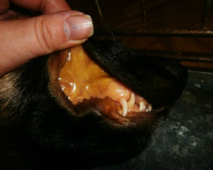

БАБЕЗИОЗ (ПИРОПЛАЗМОЗ)

С приходом весны активизируются клещи, которые переносят опасную
болезнь для собак бабезиоз (пироплазмоз). Чаще всего хозяева находят на
теле животных клещей разного размера. Но бывает и так, что клещ, после
того как напился крови, отпадает самостоятельно.
Проявление первых симптомов может произойти на 2–4 день после
укуса клеща.
Наиболее распространенные признаки – это:
- вялость
- слабость
задних конечностей
- повышенная температура (редко, пониженная до 37 0 С)
- бледность слизистых оболочек
- окрашивание мочи в оранжевый, бурый илитемно-коричневый цвет
При несвоевременном обращении к ветеринарному
врачу и запоздалого оказания помощи, у животного развивается печеночная
и почечная недостаточность. Животное может погибнуть.
Для подтверждения бабезиоза делают анализ крови на наличие
паразитов грушевидной формы в эритроцитах. Для анализа достаточно
капельки капиллярной крови из внутренней поверхности ушной раковины.
Но отрицательный результат, к сожалению, полностью не исключает
бабезиоза (хронические случаи, бессимптомный носитель). Чтобы полностью
исключить болезнь, дополнительно используются метод непрямой
иммунофлюоресценции или метод ЭЛИСА.
Прогноз зависит от степени тяжести болезни, возраста животного,
своевременной диагностики и терапии.
На начальных стадиях и при легком течении болезни применяют
противопаразитарный препарат (азидин, пиростоп, диминакел), а также
симптоматические лечение (препараты для поддержания кроветворной
системы, препараты для восстановления печени и витаминные препараты).
При более тяжелом течении пироплазмоза необходима интенсивная
дезинтоксикационная терапия, то есть внутривенное введение растворов.
Если кроветворная система организма животного не справляется, требуется
переливание крови.
Очень важна своевременная профилактика от бабезиоза.
Противоклещевые препараты подбираются индивидуально, обязательно
учитывая возраст, вес и физиологическое состояние питомца. Это могут быть
капли spot on (Бар’єр, Барс, Дана, Rexolin, Plus, Advantix, FrontLine, Sentry,
FibroGuard и т. п.), ошейники (Foresto, Kiltex, Trixie Bio, Bolfo Beaphar BIO
BAND и т. п.), спреи (Фронтлайн, Больфо, Fypryst Spray и т. п.) и таблетки
(Бравекто, Нексгард, Комфортис).